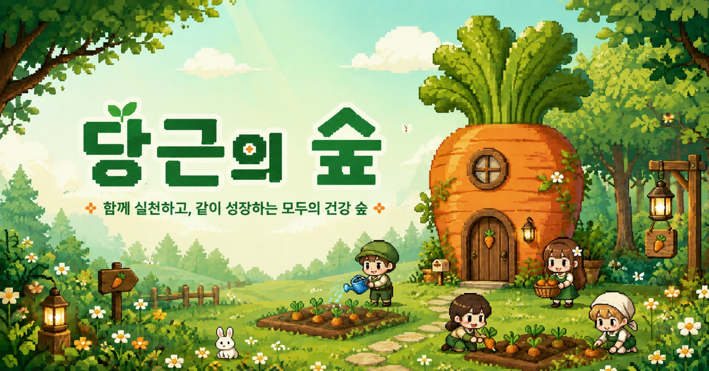
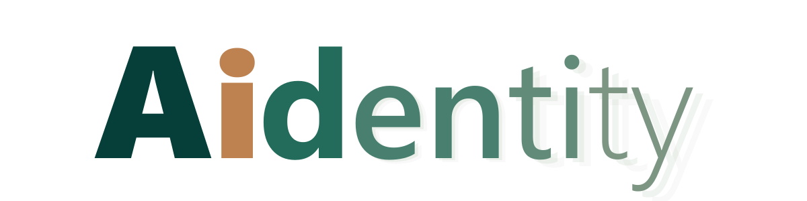
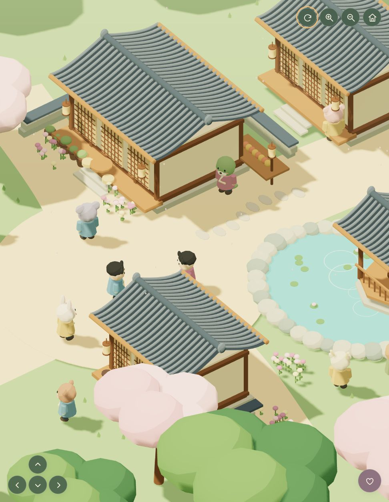

간당간당
위험 신호를 이해하고, 생활습관을 실천하는 건강 챌린지.
자가 이해를 돕는 참고 정보이며 진단·처방이 아닙니다.간당간당 체험하기

개인의 신호를 이해하고,
스스로 선택하는 실천으로 이어갑니다.
오늘의 행동으로 이어지는 도움.
이해와 선택을 먼저 존중.
작은 신호를 나다운 행동으로.

위험 신호를 이해하고, 생활습관을 실천하는 건강 챌린지.
자가 이해를 돕는 참고 정보이며 진단·처방이 아닙니다.간당간당 체험하기건강정보 없이 걷고 인사하는 환경 프로토타입.
마을 둘러보기
CEO · 대표

CTO · 기술

CERO · 대외협력
개발자 · 예비 멤버